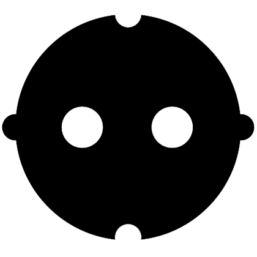
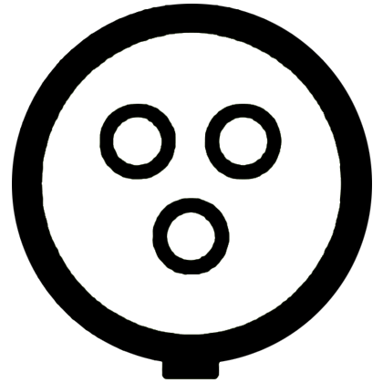
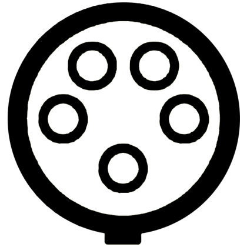
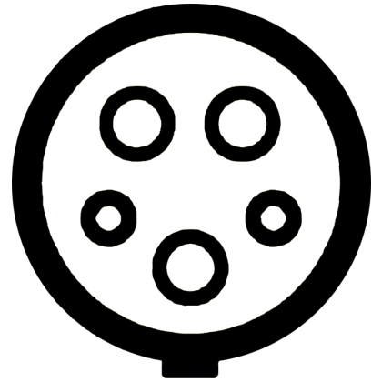

<ion-header>
    <ion-toolbar>
        <ion-buttons slot="start">
            <ion-back-button defaultHref="tabs/(map:map)"></ion-back-button>
        </ion-buttons>
        <ion-title>
            Route
        </ion-title>
    </ion-toolbar>
</ion-header>
<ion-content [formGroup]="this.navigationService.routeForm" scrollEvents="true">
    <ion-list>
        <ion-toolbar class="search">
            <ion-icon [hidden]="this.navigationService.autocompleteStartPoint.input !== 'Mein Standort'" slot="start"
                      name="radio-button-on"></ion-icon>
            <ion-icon [hidden]="this.navigationService.autocompleteStartPoint.input === 'Mein Standort'" slot="start"
                      name="radio-button-off"></ion-icon>
            <ion-input type="text" [(ngModel)]="this.navigationService.autocompleteStartPoint.input"
                       (ionInput)="this.navigationService.updateSearchResults(this.navigationService.autocompleteStartPoint)"
                       (ionFocus)="this.navigationService.showItemsStartPoint = true;
                               this.navigationService.showItemsWayPoint = false;
                               this.navigationService.showItemsEndPoint = false;
                               this.navigationService.showItemsPlaceSearch = false;
                               this.navigationService.autocompleteItems = [];"
                       placeholder="Startpunkt" formControlName="start_point">
            </ion-input>
            <ion-buttons slot="end" [hidden]="this.navigationService.autocompleteStartPoint.input < 1">
                <ion-button (click)="this.navigationService.autocompleteStartPoint.input = ''">
                    <ion-icon name="close"></ion-icon>
                </ion-button>
            </ion-buttons>
            <ion-buttons slot="end">
                <ion-button (click)="this.navigationService.getInput(this.navigationService.autocompleteStartPoint); this.navigationService.autocompleteStartPoint.input = 'Mein Standort';
                                 this.navigationService.autocompleteItems = []" class="location-button">
                    <ion-icon name="md-locate"></ion-icon>
                </ion-button>
            </ion-buttons>
        </ion-toolbar>
        <ion-fab>
            <ion-list class="place-list" *ngIf="this.navigationService.showItemsStartPoint"
                      [hidden]="this.navigationService.autocompleteStartPoint.input < 1" no-padding>
                <ion-item *ngFor="let item of this.navigationService.autocompleteItems" tappable
                          (click)="this.navigationService.selectSearchResult(item, this.navigationService.autocompleteStartPoint)">
                    {{ item.description }}
                </ion-item>
            </ion-list>
        </ion-fab>
        <div formArrayName="way_point">
            <div *ngFor="let waypointInstance of this.navigationService.wayPointArray.controls; let i = index"
                 [formGroupName]="i">
                <ion-toolbar class="search">
                    <ion-icon slot="start" name="more"></ion-icon>
                    <ion-input type="text" [(ngModel)]="waypointInstance['input']"
                               (ionInput)="this.navigationService.updateSearchResults(waypointInstance)"
                               (ionFocus)="this.navigationService.showItemsStartPoint = false;
                               this.navigationService.showItemsWayPoint = true;
                               this.navigationService.showItemsEndPoint = false;
                               this.navigationService.showItemsPlaceSearch = false;
                               this.navigationService.autocompleteItems = [];
                               saveWayPoint = waypointInstance;
                               saveWayPointIndex = i;"
                               placeholder="Zwischenstopp" formControlName="way_point_address"></ion-input>
                    <ion-buttons slot="end">
                        <ion-button (click)="this.navigationService.removeWaypoint(i)">
                            <ion-icon name="close"></ion-icon>
                        </ion-button>
                    </ion-buttons>
                </ion-toolbar>
            </div>
            <ion-fab>
                <ion-list class="place-list" *ngIf="this.navigationService.showItemsWayPoint === true"
                          [hidden]="saveWayPoint['input'] < 1" no-padding>
                    <ion-item *ngFor="let item of this.navigationService.autocompleteItems" tappable
                              (click)="this.navigationService.selectSearchResult(item, saveWayPoint)">
                        {{ item.description }}
                    </ion-item>
                </ion-list>
            </ion-fab>
        </div>

        <ion-toolbar class="search">
            <ion-icon slot="start" name="pin"></ion-icon>
            <ion-input type="text" [(ngModel)]="this.navigationService.autocompleteEndPoint.input"
                       (ionInput)="this.navigationService.updateSearchResults(this.navigationService.autocompleteEndPoint)"
                       (ionFocus)="this.navigationService.showItemsStartPoint = false;
                               this.navigationService.showItemsWayPoint = false;
                               this.navigationService.showItemsEndPoint = true;
                               this.navigationService.showItemsPlaceSearch = false;
                               this.navigationService.autocompleteItems = [];"
                       placeholder="Endpunkt" formControlName="end_point"></ion-input>
            <ion-buttons slot="end" [hidden]="this.navigationService.autocompleteEndPoint.input < 1">
                <ion-button (click)="this.navigationService.autocompleteEndPoint.input = ''">
                    <ion-icon name="close"></ion-icon>
                </ion-button>
            </ion-buttons>
        </ion-toolbar>
        <ion-fab>
            <ion-list class="place-list" *ngIf="this.navigationService.showItemsEndPoint"
                      [hidden]="this.navigationService.autocompleteEndPoint.input < 1" no-padding>
                <ion-item *ngFor="let item of this.navigationService.autocompleteItems" tappable
                          (click)="this.navigationService.selectSearchResult(item, this.navigationService.autocompleteEndPoint);">
                    {{ item.description }}
                </ion-item>
            </ion-list>
        </ion-fab>

        <div class="waypt-button">
            <ion-button slot="start" size="small" shape="round" color="primary" fill="clear"
                        (click)="this.navigationService.addWaypoints()">
                <ion-icon slot="start" name="add-circle-outline"></ion-icon>
                Zwischenstopp
            </ion-button>
        </div>

        <ion-list>
            <ion-item>
                <ion-input type="number" placeholder="aktuelle Reichweite in km"></ion-input>
            </ion-item>
            <ion-item>
                <ion-segment formControlName="temperature">
                    <ion-segment-button [checked]="this.navigationService.routeForm.value['temperature'] === 'cold'"
                                        value="cold">
                        <ion-icon name="snow"></ion-icon>
                        <ion-label>unter 15 C°</ion-label>
                    </ion-segment-button>
                    <ion-segment-button [checked]="this.navigationService.routeForm.value['temperature'] === 'usual'"
                                        value="usual">
                        <ion-icon name="sunny"></ion-icon>
                        <ion-label>15-40 C°</ion-label>
                    </ion-segment-button>
                    <ion-segment-button [checked]="this.navigationService.routeForm.value['temperature'] === 'hot'"
                                        value="hot">
                        <ion-icon name="flame"></ion-icon>
                        <ion-label>über 40 C°</ion-label>
                    </ion-segment-button>
                </ion-segment>
            </ion-item>
            <ion-item>
                <ion-segment formControlName="driving_style">
                    <ion-segment-button [checked]="this.navigationService.routeForm.value['driving_style'] === 'slow'"
                                        value="slow">
                        <ion-icon name="bed"></ion-icon>
                        <ion-label>gemütlich</ion-label>
                    </ion-segment-button>
                    <ion-segment-button [checked]="this.navigationService.routeForm.value['driving_style'] === 'normal'"
                                        value="normal">
                        <ion-icon name="car"></ion-icon>
                        <ion-label>normal</ion-label>
                    </ion-segment-button>
                    <ion-segment-button [checked]="this.navigationService.routeForm.value['driving_style'] === 'fast'"
                                        value="fast">
                        <ion-icon name="rocket"></ion-icon>
                        <ion-label>sportlich</ion-label>
                    </ion-segment-button>
                </ion-segment>
            </ion-item>
            <ion-item>
                <div class="plug-types">
                    <ion-row>
                        <ion-col>
                            
                            <ion-checkbox [checked]="this.navigationService.routeForm.value['plug_schuko']"
                                          formControlName="plug_schuko"></ion-checkbox>
                        </ion-col>
                        <ion-col>
                            
                            <ion-checkbox [checked]="this.navigationService.routeForm.value['plug_cee_blue']"
                                          formControlName="plug_cee_blue"></ion-checkbox>
                        </ion-col>
                        <ion-col>
                            
                            <ion-checkbox [checked]="this.navigationService.routeForm.value['plug_cee_red']"
                                          formControlName="plug_cee_red"></ion-checkbox>
                        </ion-col>
                        <ion-col>
                            
                            <ion-checkbox [checked]="this.navigationService.routeForm.value['plug_type1']"
                                          formControlName="plug_type1"></ion-checkbox>
                        </ion-col>
                        <ion-col>
                            
                            <ion-checkbox [checked]="this.navigationService.routeForm.value['plug_type2']"
                                          formControlName="plug_type2"></ion-checkbox>
                        </ion-col>
                        <ion-col>
                            
                            <ion-checkbox [checked]="this.navigationService.routeForm.value['plug_ccs']"
                                          formControlName="plug_ccs"></ion-checkbox>
                        </ion-col>
                        <ion-col>
                            
                            <ion-checkbox [checked]="this.navigationService.routeForm.value['plug_chademo']"
                                          formControlName="plug_chademo"></ion-checkbox>
                        </ion-col>
                    </ion-row>
                </div>
            </ion-item>
            <ion-item>
                <ion-checkbox style="margin-left: 18px"
                              [checked]="this.navigationService.routeForm.value['station_normal']"
                              formControlName="station_normal"></ion-checkbox>
                <ion-label style="text-align: center">Normalladestionen</ion-label>
                
            </ion-item>
            <ion-item>
                <ion-checkbox style="margin-left: 18px"
                              [checked]="this.navigationService.routeForm.value['station_fast']"
                              formControlName="station_fast"></ion-checkbox>
                <ion-label style="text-align: center">Schnellladestationen</ion-label>
                
            </ion-item>
        </ion-list>
        <!-- div class="info-button"
             [hidden]="this.navigationService.showInfoButton != false">
            <ion-button slot="start" size="small" shape="round" color="primary" fill="clear"
                        (click)="this.navigationService.showInfoButton = true;">
                <ion-icon slot="start" name="information-circle-outline"></ion-icon>
                Informationen hinzufügen
            </ion-button>
        </div>

        <ion-list *ngIf="this.navigationService.showInfoButton"
                  [hidden]="this.navigationService.showInfoButton != true">
            <ion-item class="car-information-title" lines="none">
                <ion-label>Informationen hinzufügen</ion-label>
            </ion-item>
            <div class="car-information">
                <ion-item *ngIf="this.navigationService.reach != ''">
                    <ion-input formControlName="reach" type="number" value="{{this.navigationService.reach}}"></ion-input>
                </ion-item>
                <ion-item *ngIf="this.navigationService.reach == ''">
                    <ion-input formControlName="reach" type="number" placeholder="aktuelle Reichweite in km"></ion-input>
                </ion-item>
                <ion-item>Fahrstil
                    <ion-button [hidden]="this.navigationService.showDrivingStyle != false"
                                slot="end" size="small" fill="clear"
                                (click)="this.navigationService.addDrivingStyle();
                                            this.navigationService.showDrivingStyle = true;">
                        <ion-icon color="dark" name="arrow-dropdown"></ion-icon>
                    </ion-button>
                    <ion-button *ngIf="this.navigationService.showDrivingStyle"
                                [hidden]="this.navigationService.showDrivingStyle != true"
                                slot="end" size="small" fill="clear"
                                (click)="this.navigationService.removeDrivingStyle();
                                            this.navigationService.showDrivingStyle = false;">
                        <ion-icon color="dark" name="arrow-dropup"></ion-icon>
                    </ion-button>
                </ion-item>
                <div formArrayName="driving_style"
                     *ngIf="this.navigationService.showDrivingStyle"
                     [hidden]="this.navigationService.showDrivingStyle != true">
                    <div *ngFor="let drivingStyleInstance of this.navigationService.drivingStyleArray.controls; let i = index"
                         [formGroupName]="i">
                        <ion-list>
                            <ion-item>
                                <ion-label>Vorausschauend</ion-label>
                                
                                <ion-checkbox [hidden]="this.navigationService.driving_style != 'slow'"
                                              (click)="this.navigationService.driving_style = '';"
                                              slot="start" value="slow"
                                              formControlName = "slow" checked></ion-checkbox>
                                <ion-checkbox [hidden]="this.navigationService.driving_style == 'slow'"
                                              (click)="this.navigationService.driving_style = 'slow';"
                                              slot="start" value="slow"
                                              formControlName = "slow"></ion-checkbox>
                            </ion-item>
                            <ion-item>
                                <ion-label>Normal</ion-label>
                                
                                <ion-checkbox [hidden]="this.navigationService.driving_style != 'normal'"
                                              (click)="this.navigationService.driving_style = '';"
                                              slot="start" value="normal"
                                              formControlName = "normal" checked></ion-checkbox>
                                <ion-checkbox [hidden]="this.navigationService.driving_style == 'normal'"
                                              (click)="this.navigationService.driving_style = 'normal';"
                                              slot="start" value="normal"
                                              formControlName = "normal"></ion-checkbox>
                            </ion-item>
                            <ion-item>
                                <ion-label>Sportlich</ion-label>
                                
                                <ion-checkbox [hidden]="this.navigationService.driving_style != 'fast'"
                                              (click)="this.navigationService.driving_style = '';"
                                              slot="start" value="fast"
                                              formControlName = "fast" checked></ion-checkbox>
                                <ion-checkbox [hidden]="this.navigationService.driving_style == 'fast'"
                                              (click)="this.navigationService.driving_style = 'fast';"
                                              slot="start" value="fast"
                                              formControlName = "fast"></ion-checkbox>
                            </ion-item>
                        </ion-list>
                    </div>
                </div>
                <ion-item>Temperatur
                    <ion-button [hidden]="this.navigationService.showTemperature != false"
                                slot="end" size="small" fill="clear"
                                (click)="this.navigationService.addTemperature();
                                            this.navigationService.showTemperature = true;">
                        <ion-icon color="dark" name="arrow-dropdown"></ion-icon>
                    </ion-button>
                    <ion-button *ngIf="this.navigationService.showTemperature"
                                [hidden]="this.navigationService.showTemperature != true"
                                slot="end" size="small" fill="clear"
                                (click)="this.navigationService.removeTemperature();
                                            this.navigationService.showTemperature = false;">
                        <ion-icon color="dark" name="arrow-dropup"></ion-icon>
                    </ion-button>
                </ion-item>
                <div formArrayName="temperature"
                     *ngIf="this.navigationService.showTemperature"
                     [hidden]="this.navigationService.showTemperature != true">
                    <div *ngFor="let temperatureInstance of this.navigationService.temperatureArray.controls; let i = index"
                         [formGroupName]="i">
                        <ion-list>
                            <ion-item>
                                <ion-label>unter 10°C</ion-label>
                                
                                <ion-checkbox slot="start" value="cold"
                                              formControlName = "cold"></ion-checkbox>
                            </ion-item>
                            <ion-item>
                                <ion-label>10° bis 40°C</ion-label>
                                
                                <ion-checkbox slot="start" value="usual"
                                              formControlName = "usual"></ion-checkbox>
                            </ion-item>
                            <ion-item>
                                <ion-label>über 40°C</ion-label>
                                
                                <ion-checkbox slot="start" value="heat"
                                              formControlName = "heat"></ion-checkbox>
                            </ion-item>
                        </ion-list>
                    </div>
                </div>
                <ion-item>Steckertypen
                        <ion-button [hidden]="this.navigationService.showPlugTypes != false"
                                    slot="end" size="small" fill="clear"
                                    (click)="this.navigationService.addPlugType();
                                            this.navigationService.showPlugTypes = true;">
                            <ion-icon color="dark" name="arrow-dropdown"></ion-icon>
                        </ion-button>
                        <ion-button *ngIf="this.navigationService.showPlugTypes"
                                    [hidden]="this.navigationService.showPlugTypes != true"
                                slot="end" size="small" fill="clear"
                                    (click)="this.navigationService.removePlugType();
                                            this.navigationService.showPlugTypes = false;">
                            <ion-icon color="dark" name="arrow-dropup"></ion-icon>
                        </ion-button>
                </ion-item>
                <div formArrayName="plug_types"
                     *ngIf="this.navigationService.showPlugTypes"
                     [hidden]="this.navigationService.showPlugTypes != true">
                    <div *ngFor="let plugtypeInstance of this.navigationService.plugTypeArray.controls; let i = index"
                         [formGroupName]="i">
                        <ion-list>
                        <ion-item>
                               <ion-label>AC Schuko</ion-label>
                               
                                <ion-checkbox slot="start" value="schuko"
                                              formControlName = "schuko"
                                (ionFocus)="savePlugType = plugtypeInstance;
                                            savePlugTypeIndex = i;"></ion-checkbox>
                        </ion-item>
                        <ion-item>
                               <ion-label>AC CEE 3 polig</ion-label>
                               
                                <ion-checkbox slot="start" value="cee3"
                                              formControlName = "cee3"
                                (ionFocus)="savePlugType = plugtypeInstance;
                                            savePlugTypeIndex = i;"></ion-checkbox>
                        </ion-item>
                        <ion-item>
                               <ion-label>AC CEE 5 polig</ion-label>
                               
                                <ion-checkbox slot="start" value="cee5"
                                              formControlName = "cee5"></ion-checkbox>
                        </ion-item>
                        <ion-item>
                               <ion-label>AC Kupplung Typ 2</ion-label>
                               
                                <ion-checkbox slot="start" value="kupplung2"
                                              formControlName = "kupplung2"></ion-checkbox>
                        </ion-item>
                        <ion-item>
                               <ion-label>AC Steckdose Typ 2</ion-label>
                               
                                <ion-checkbox slot="start" value="type2"
                                              formControlName = "type2"></ion-checkbox>
                        </ion-item>
                        <ion-item>
                               <ion-label>DC CHAdeMO</ion-label>
                               
                                <ion-checkbox slot="start" value="chademo"
                                              formControlName = "chademo"></ion-checkbox>
                        </ion-item>
                        <ion-item>
                               <ion-label>DC Kupplung Combo</ion-label>
                               
                                <ion-checkbox slot="start" value="ccs"
                                              formControlName = "ccs"></ion-checkbox>
                        </ion-item>
                        <ion-item>
                               <ion-label>Steckdose Typ 1</ion-label>
                               
                                <ion-checkbox slot="start" value="type1"
                                              formControlName = "type1"></ion-checkbox>
                        </ion-item>
                        </ion-list>
                    </div>
                </div>
                <ion-item [hidden]="this.navigationService.saveStationType != true">
                    <ion-label>nur Schnellladestationen</ion-label>
                    <ion-toggle formControlName="station_type"
                                (change)="this.navigationService.saveStationType = false;"
                                checked></ion-toggle>
                </ion-item>
                <ion-item [hidden]="this.navigationService.saveStationType != false">
                    <ion-label>nur Schnellladestationen</ion-label>
                    <ion-toggle formControlName="station_type"
                        (change)="this.navigationService.saveStationType = true;"></ion-toggle>
                </ion-item>
                </div>
        </ion-list -->


        <div class="start-button" text-center>
            <ion-button
                    [disabled]="!this.navigationService.routeForm.valid"
                    slot="end" shape="round" color="primary" fill="outline"
                    (click)="this.navigationService.convertObj(this.navigationService.routeForm.value['start_point'],
                         this.navigationService.routeForm.value['end_point'],
                         this.navigationService.routeForm.value['way_point'])">
                <ion-icon slot="start" name="car"></ion-icon>
                Route berechnen
            </ion-button>
        </div>
    </ion-list>
</ion-content>

<!-- this.navigationService.saveUserData(this.navigationService.routeForm.value['reach'],
                         this.navigationService.routeForm.value['driving_style'],
                         this.navigationService.routeForm.value['temperature'],
                         this.navigationService.routeForm.value['plug_types'],
                         this.navigationService.routeForm.value['station_type']);
                         this.navigationService.showInfoButton = false; -->
